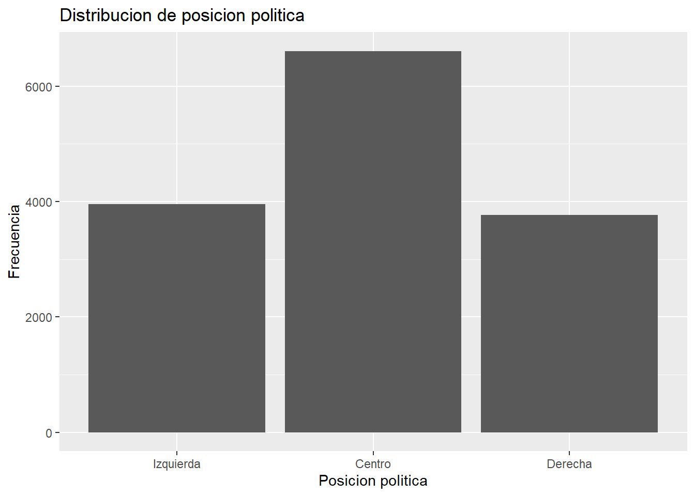
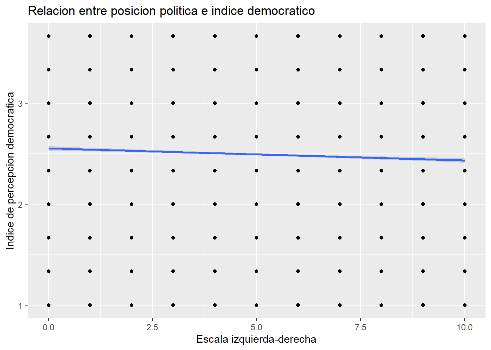
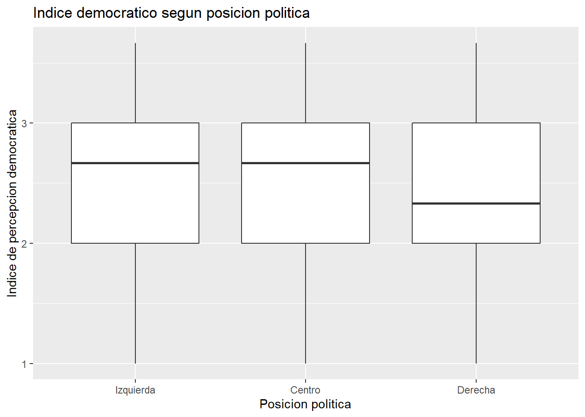
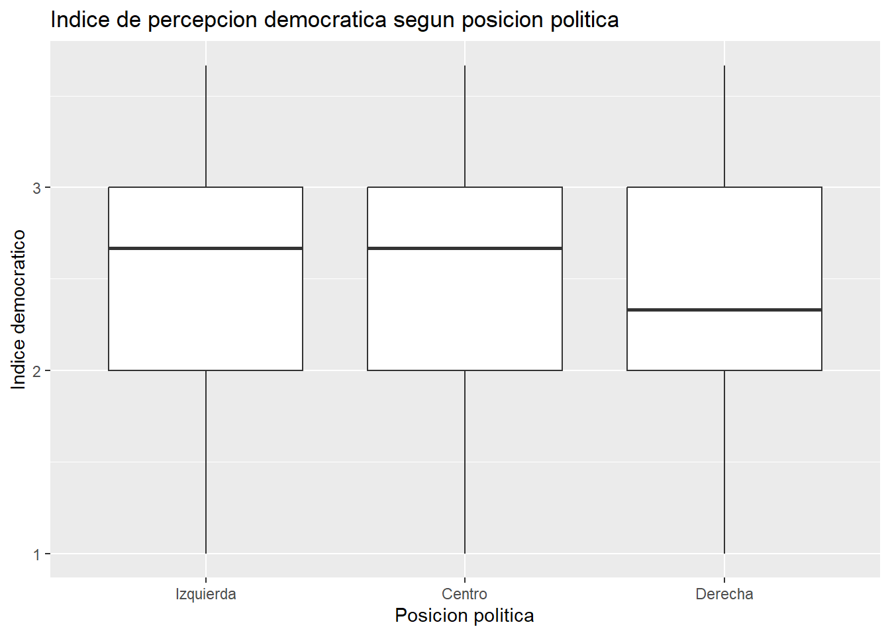
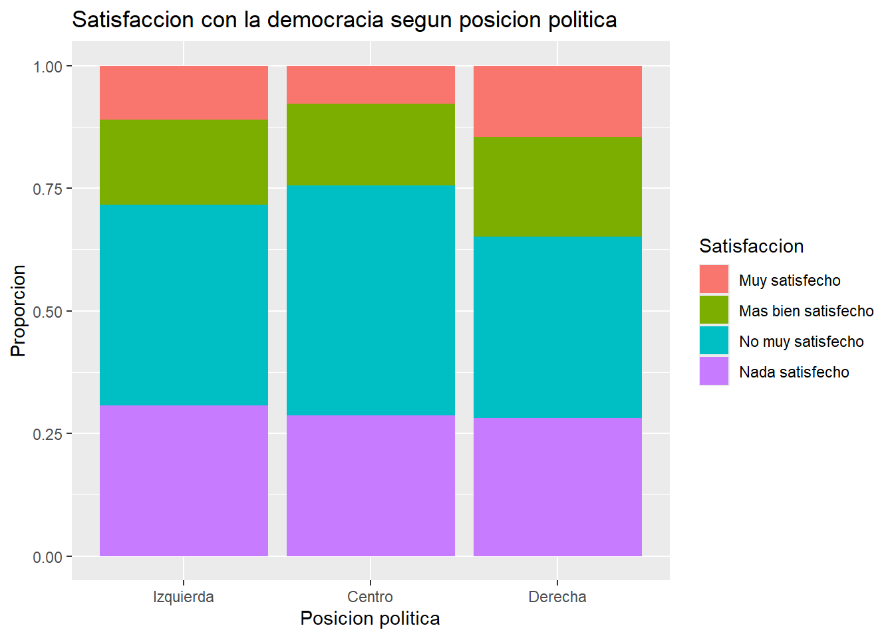

## [1] 20204 408Practico 3 - Tomas Fuentes
Introduccion
Dentro de nuestro contexto de America Latina, hemos presenciado una alta variabilidad en los tipos de gobierno dentro de la region, existiendo una disparidad constante entre los sectores politicos de izquierda y los sectores politicos de derecha. Teniendo en cuenta esto, se observa que en los ultimos años los gobiernos de cada pais van cambiando de un sector a otro dependiendo de sus contextos especificos de cada pais. Tenemos los ejemplos de Brazil de un paso de un gobierno de derecha a izquierda, Chile de un gobierno de derecha a izquierda, o teniendo en cuenta mas el aspecto contemporaneos cambios de izquierda a derecha.
Si bien para efectos de este trabajo, la finalidad es buscar observar, entender y analizar ¿Como varian los niveles de confianza y legitimidad democratica segun la posicion politica de las personas encuestadas a traves de latinobarometro?. Entendiendo que America Latina muestra dinamicas variables por factores sociopoliticos (Estella De Noriega 2020)
Cargamos paquetes
Cargamos base de datos del latinobarometro 2020
Observamos la dimension de la base de datos
A traves del codigo dim y view podemos visualizar la dimension y las variables de la base de datos que utilizaremos
Elegimos las variables a utilizar
## P11STGBS_A
## "P11STGBS.A Satisfacción con la democracia"
## p10stgbs
## "P10STGBS Apoyo a la democracia"
## p13st_h
## "P13ST.H Confianza en: La institución Electoral del país"
## sexo
## ""
## p18st
## "P18ST Escala Izquierda-Derecha"| Variable | media | mediana | sd | min | max | n |
|---|---|---|---|---|---|---|
| Escala izquierda-derecha | 4.96 | 5 | 2.96 | 0 | 10 | 14332 |
| sexo | n | porcentaje |
|---|---|---|
| Hombre | 7349 | 51.28 |
| Mujer | 6983 | 48.72 |
| posicion_politica | n | porcentaje |
|---|---|---|
| Izquierda | 3953 | 27.58 |
| Centro | 6610 | 46.12 |
| Derecha | 3769 | 26.30 |
| satisfaccion_democracia | n | porcentaje |
|---|---|---|
| Muy satisfecho | 1496 | 10.44 |
| Mas bien satisfecho | 2557 | 17.84 |
| No muy satisfecho | 6104 | 42.59 |
| Nada satisfecho | 4175 | 29.13 |
| apoyo_democracia | n | porcentaje |
|---|---|---|
| Democracia preferible | 8053 | 56.19 |
| Autoritarismo preferible | 2195 | 15.32 |
| Da lo mismo el regimen | 4084 | 28.50 |
| conf_institucion_electoral | n | porcentaje |
|---|---|---|
| Mucha confianza | 1599 | 11.16 |
| Algo de confianza | 3468 | 24.20 |
| Poca confianza | 4666 | 32.56 |
| Ninguna confianza | 4599 | 32.09 |

Creacion de Indice de satisfaccion con la democracia y correlacion con posicion politica
library(psych)
Adjuntando el paquete: 'psych'The following objects are masked from 'package:ggplot2':
%+%, alphaThe following object is masked from 'package:car':
logitcorrelaciones_num <- proc_data %>%
select(
satisfaccion_democracia,
apoyo_democracia,
conf_institucion_electoral
) %>%
mutate(across(everything(), as.numeric))
psych::alpha(correlaciones_num)
Reliability analysis
Call: psych::alpha(x = correlaciones_num)
raw_alpha std.alpha G6(smc) average_r S/N ase mean sd median_r
0.44 0.43 0.35 0.2 0.77 0.0081 2.5 0.64 0.16
95% confidence boundaries
lower alpha upper
Feldt 0.42 0.44 0.45
Duhachek 0.42 0.44 0.45
Reliability if an item is dropped:
raw_alpha std.alpha G6(smc) average_r S/N alpha se
satisfaccion_democracia 0.21 0.21 0.12 0.12 0.27 0.0131
apoyo_democracia 0.50 0.50 0.33 0.33 1.00 0.0083
conf_institucion_electoral 0.28 0.28 0.16 0.16 0.38 0.0121
var.r med.r
satisfaccion_democracia NA 0.12
apoyo_democracia NA 0.33
conf_institucion_electoral NA 0.16
Item statistics
n raw.r std.r r.cor r.drop mean sd
satisfaccion_democracia 14332 0.73 0.73 0.51 0.34 2.9 0.94
apoyo_democracia 14332 0.59 0.62 0.25 0.17 1.7 0.88
conf_institucion_electoral 14332 0.73 0.71 0.46 0.30 2.9 0.99
Non missing response frequency for each item
1 2 3 4 miss
satisfaccion_democracia 0.10 0.18 0.43 0.29 0
apoyo_democracia 0.56 0.15 0.28 0.00 0
conf_institucion_electoral 0.11 0.24 0.33 0.32 0resultado_alpha <- psych::alpha(correlaciones_num)
alpha_total <- resultado_alpha$total
alpha_raw <- resultado_alpha$total$raw_alpha
proc_data$indice_democracia <- rowMeans(
correlaciones_num,
na.rm = TRUE
)
summary(proc_data$indice_democracia) Min. 1st Qu. Median Mean 3rd Qu. Max.
1.000 2.000 2.667 2.494 3.000 3.667 sd(proc_data$indice_democracia,
na.rm = TRUE)[1] 0.6434617tabla_indice <- data.frame(
Variable = "Indice de percepcion democratica",
media = round(
mean(proc_data$indice_democracia,
na.rm = TRUE),2),
mediana = round(
median(proc_data$indice_democracia,
na.rm = TRUE),2),
sd = round(
sd(proc_data$indice_democracia,
na.rm = TRUE),2),
min = min(proc_data$indice_democracia,
na.rm = TRUE),
max = max(proc_data$indice_democracia,
na.rm = TRUE),
n = sum(!is.na(proc_data$indice_democracia))
)
kable(
tabla_indice,
caption = "Tabla descriptiva del indice de percepcion democratica"
)| Variable | media | mediana | sd | min | max | n |
|---|---|---|---|---|---|---|
| Indice de percepcion democratica | 2.49 | 2.67 | 0.64 | 1 | 3.666667 | 14332 |
tabla_cor <- cor(
correlaciones_num,
use = "complete.obs"
)
tabla_cor satisfaccion_democracia apoyo_democracia
satisfaccion_democracia 1.0000000 0.1598963
apoyo_democracia 0.1598963 1.0000000
conf_institucion_electoral 0.3335905 0.1175288
conf_institucion_electoral
satisfaccion_democracia 0.3335905
apoyo_democracia 0.1175288
conf_institucion_electoral 1.0000000kable(
tabla_cor,
caption = "Tabla de correlaciones"
)| satisfaccion_democracia | apoyo_democracia | conf_institucion_electoral | |
|---|---|---|---|
| satisfaccion_democracia | 1.0000000 | 0.1598963 | 0.3335905 |
| apoyo_democracia | 0.1598963 | 1.0000000 | 0.1175288 |
| conf_institucion_electoral | 0.3335905 | 0.1175288 | 1.0000000 |
ggplot(proc_data,
aes(x = indice_democracia)) +
geom_histogram(bins = 10) +
labs(
title = "Distribucion del indice de percepcion democratica",
x = "Indice",
y = "Frecuencia"
)
cor(
proc_data$indice_democracia,
proc_data$escala_izq_der,
use = "complete.obs"
)[1] -0.05516386ggplot(proc_data,
aes(x = escala_izq_der,
y = indice_democracia)) +
geom_point(alpha = 0.3) +
geom_smooth(method = "lm") +
labs(
title = "Relacion entre posicion politica e indice democratico",
x = "Escala izquierda-derecha",
y = "Indice de percepcion democratica"
)`geom_smooth()` using formula = 'y ~ x'
ggplot(proc_data,
aes(x = posicion_politica,
y = indice_democracia)) +
geom_boxplot() +
labs(
title = "Indice democratico segun posicion politica",
x = "Posicion politica",
y = "Indice de percepcion democratica"
)
proc_data$indice_democracia <- rowMeans(
correlaciones_num,
na.rm = TRUE
)
summary(proc_data$indice_democracia) Min. 1st Qu. Median Mean 3rd Qu. Max.
1.000 2.000 2.667 2.494 3.000 3.667 sd(proc_data$indice_democracia)[1] 0.6434617ggplot(proc_data,
aes(x = posicion_politica,
y = indice_democracia)) +
geom_boxplot() +
labs(
title = "Indice de percepcion democratica segun posicion politica",
x = "Posicion politica",
y = "Indice democratico"
)
tabla_cruzada <- table(
proc_data$posicion_politica,
proc_data$satisfaccion_democracia
)
tabla_cruzada
Muy satisfecho Mas bien satisfecho No muy satisfecho
Izquierda 435 686 1618
Centro 514 1105 3092
Derecha 547 766 1394
Ninguno 0 0 0
Nada satisfecho
Izquierda 1214
Centro 1899
Derecha 1062
Ninguno 0ggplot(proc_data,
aes(x = posicion_politica,
fill = satisfaccion_democracia)) +
geom_bar(position = "fill") +
labs(
title = "Satisfaccion con la democracia segun posicion politica",
x = "Posicion politica",
y = "Proporcion",
fill = "Satisfaccion"
)
References
Estella De Noriega, Antonio. 2020. “Confianza Institucional En América Latina: Un Análisis Comparado.” Documentos de Trabajo, May. https://doi.org/10.33960/issn-e.1885-9119.DT34.